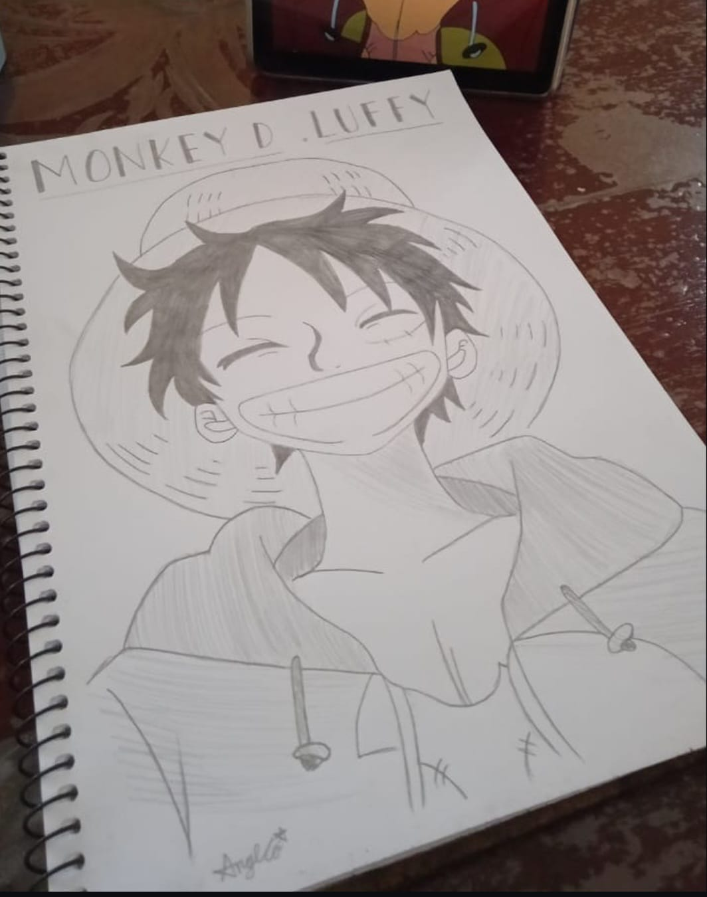
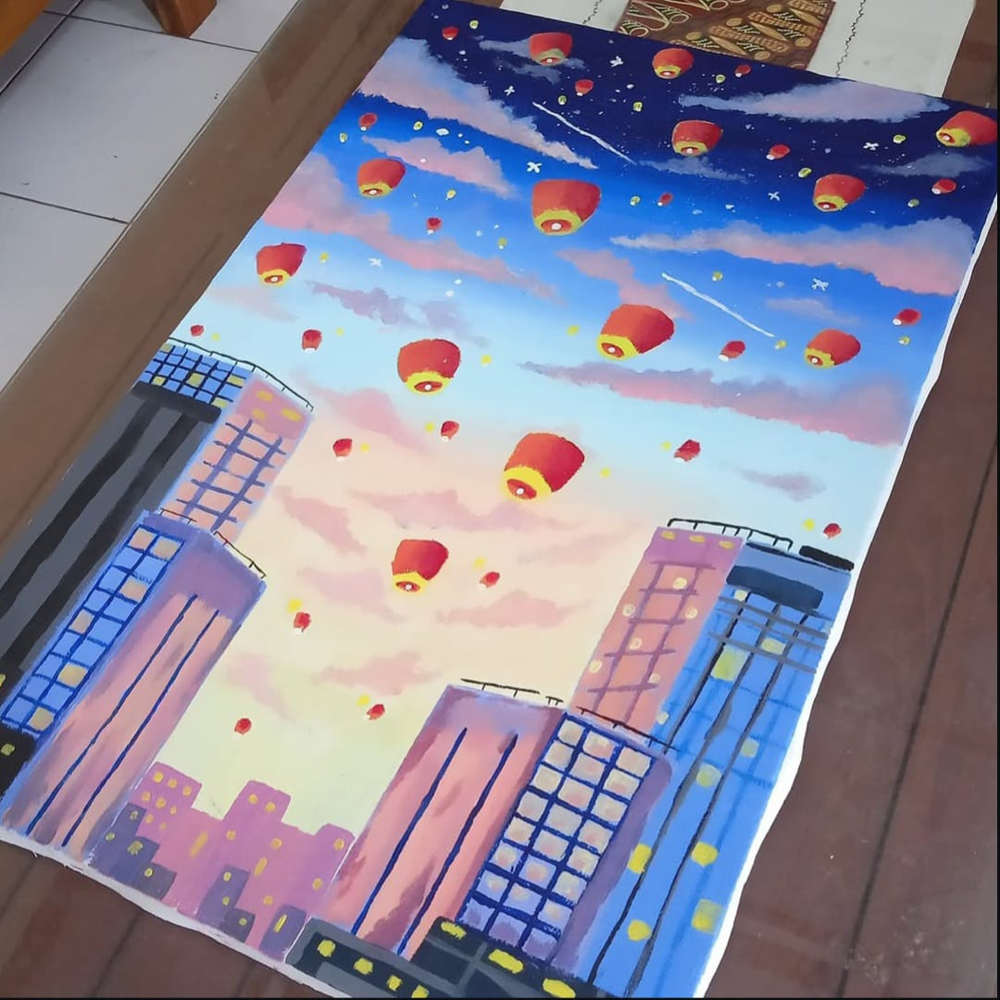
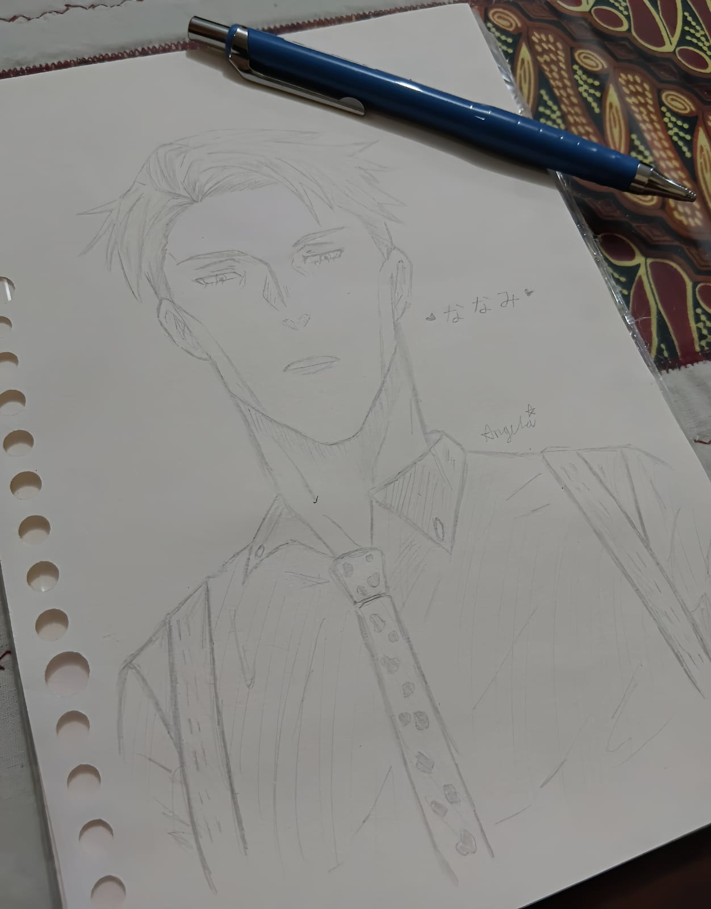
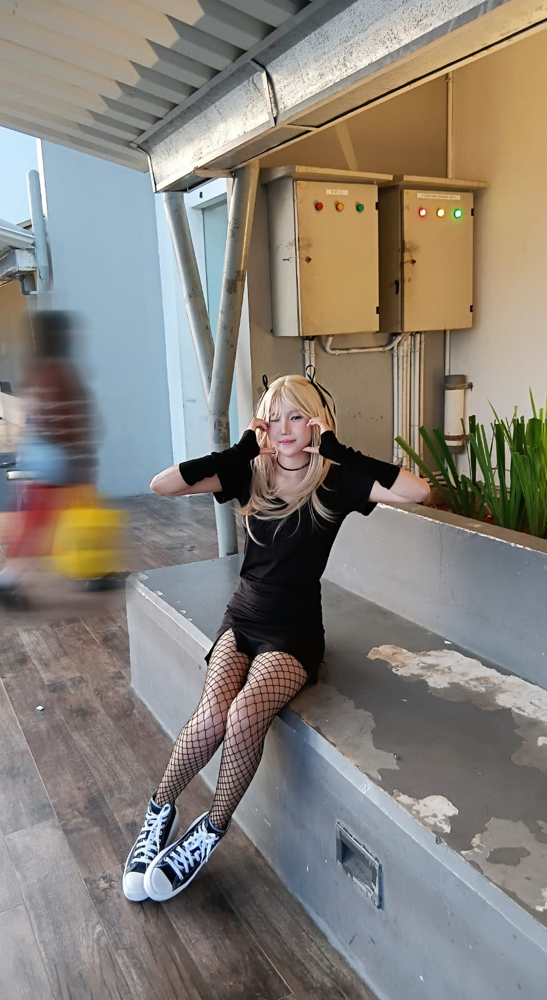
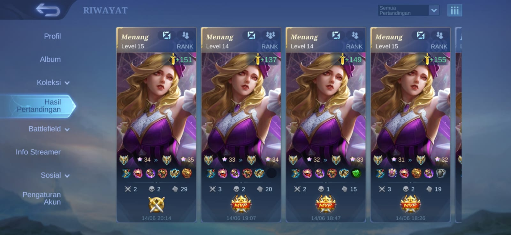

Data Diri
| Nama Lengkap | Angela Giovanni Permata Putri |
|---|---|
| Tempat, Tanggal Lahir | Boyolali, 2 Februari 2007 |
| Alamat | Nglayut RT 20 RW 4 Dlingo Mojosongo Boyolali |
| Universitas | Universitas Sanata Dharma |
| Jurusan | Informatika |
| angelagiovann02@gmail.com |

| Nama Lengkap | Angela Giovanni Permata Putri |
|---|---|
| Tempat, Tanggal Lahir | Boyolali, 2 Februari 2007 |
| Alamat | Nglayut RT 20 RW 4 Dlingo Mojosongo Boyolali |
| Universitas | Universitas Sanata Dharma |
| Jurusan | Informatika |
| angelagiovann02@gmail.com |
Saya adalah mahasiswa Informatika semester 3. Kesibukan saya setiap hari adalah belajar di kampus dan mengerjakan tugas. Saya adalah orang yang introvert dan tidak memiliki banyak teman, tapi saya tetap bertanggung jawab dan berkontribusi dalam kerja tim.
Saya sangat suka seni. Bagi saya seni adalah cara untuk mengekspresikan diri, dan apapun yang berhubungan dengan seni selalu menarik perhatian saya. Saya juga sudah membuat cukup banyak karya seni, seperti lukisan, yang bisa dilihat di bagian Portofolio.
Saya hobi cosplay dan menjadi cosplayer anime. Lewat cosplay saya bisa menjadi karakter dari anime dan menuangkan kreativitas lewat kostum dan penampilan.
Saya juga seorang gamer. Game yang saya mainkan adalah Mobile Legends, dan skill bermain saya cukup bagus. Saya menikmati serunya bermain bersama tim.
Saya suka membaca. Saya memiliki banyak buku novel dan buku-buku lainnya. Membaca membuat saya bisa menikmati cerita sekaligus menambah wawasan.
Saya suka makeup dan skill saya di bidang ini cukup baik. Bagi saya makeup juga termasuk seni, karena wajah bisa menjadi kanvas untuk berkreasi.

Lukisan karakter Monkey D. Luffy dari anime One Piece.

Lukisan pemandangan kota dengan lampion di langit.

Lukisan karakter Nanami Kento dari anime Jujutsu Kaisen.

Saya cosplay menjadi Misa Amane dari anime Death Note.

Tangkapan layar riwayat pertandingan Mobile Legends dengan hero Carmilla yang berhasil saya menangkan.
Hasil makeup saya dengan gaya Douyin.